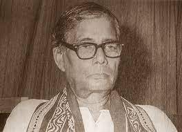

Jasimuddin was married to Begum Mamtaz Jasimuddin (d. 2006). Together they had three sons, Kamal Anwar Hashu, Firoz Anwar and Khurshid Anwar, and two daughters, Begum Hasna Moudud and Asma Elahi. Hasna is the wife of politician Moudud Ahmed. Asma is married to Tawfiq-e-Elahi Chowdhury.